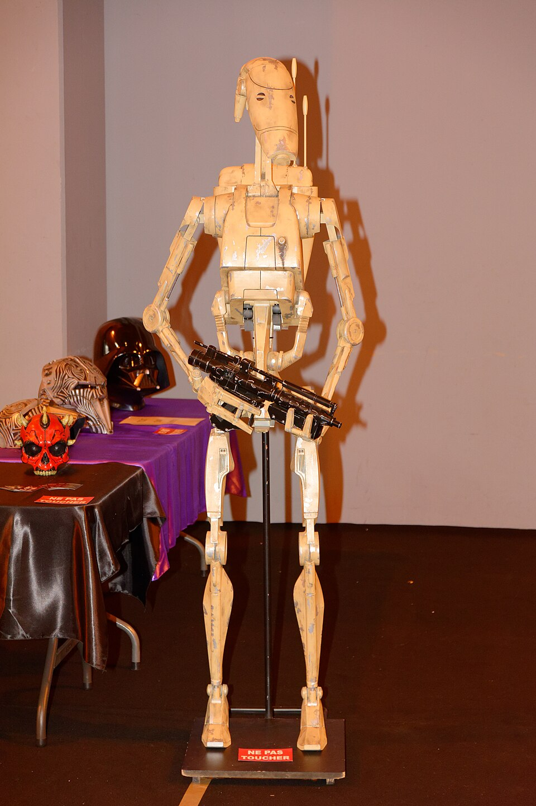

Helena. “How do you know they have no soul?”

Afbeelding : Thomas Bresson, SF-Connexion 10ème édition, Colmar (Haut-Rhin), 31 octobre 2021, via Wikimedia Commons, https://commons.wikimedia.org/wiki/File:2021-10-31_10-11-37_sf-connexion-Colmar.jpg
Het woord “clanker” kreeg brede bekendheid door zijn gebruik in de Star Wars-franchise, waar het eerst opdook in de videogame Star Wars: Republic Commando (2005) en later in de animatieserie Star Wars: The Clone Wars (2008). Toch gaat het gebruik van de term veel verder terug: volgens de Historical Dictionary of Science Fiction circuleert “clanker” al sinds 1958 in sciencefiction, waar het een ander woord is voor “robot”. (Merriam-Webster, z.d.) in Star Wars; The Clone Wars refereert het naar een droid waarvan het geheugen voortdurend uit wordt gewist, waardoor die met een leeg, metalen hoofd kan vechten in de ‘Clone wars’. Clank komt van het geluid dat het maakt wanneer je op het lege metalen hoofd slaat van een robot. In 2025 is deze term wijdverspreid als uitdrukking van menselijke frustratie en angst over de opkomst van machines in de samenleving en de arbeidsmarkt, verwijzend naar de 'klank' van metalen robots. Het woord Clanker wordt meer en meer gebruikt als scheldwoord voor de obscure angst die men voelt om overgenomen te worden door robots.
Vandaag draagt het woord een nieuwe lading. In 2025 is "clanker" uitgegroeid tot een uitdrukking van menselijke frustratie en angst over de opkomst van machines in de samenleving en op de arbeidsmarkt. Het wordt steeds vaker gebruikt als scheldwoord voor de obscure en onbehagelijke angst om overmeesterd te worden door robots.
Toch heeft het gebruik van dat acheldwoord een schaduwzijde. In het artikel "How 'Clanker' Became an Anti-A.I. Rallying Cry" (The New York Times, 2025) wijzen experts op de gevaren van het normaliseren van zulk taalgebruik. Ze trekken parallellen met hoe taal historisch werd ingezet om groepen te ontmenselijken, te marginaliseren. Bovendien kan het woord in bepaalde online contexten problematisch worden, bijvoorbeeld wanneer het gekoppeld raakt aan andere vormen van discriminerende humor. ‘Did you use the C-word?’ ( post van redit PrequelMemes uit 2022, origineel is onbekent).
Uiteindelijk zegt "clanker" minder over technologie zelf dan over de houding van mensen tegenover die technologie. Het woord weerspiegelt een bredere maatschappelijke spanning: enerzijds de snelle opmars van artificiële intelligentie, anderzijds de onzekerheid, weerstand en kritische vragen die die opmars oproept. In die zin staat het symbool voor een dieper debat over hoe ver AI mag gaan, en welke plaats het mag innemen in de toekomst van werk en samenleving.
Het beeld van de lege, inhoudsloze entiteit dat aan "clanker" kleeft, biedt een verrassend aanknopingspunt met het middeleeuwse werk Parzival. Net zoals de clanker verwijst naar een robot zonder innerlijk bewustzijn, wordt Parzival aanvankelijk voorgesteld als een naïeve, bijna leeghoofdige jongeman die zonder kennis van de wereld op zoek gaat naar zijn identiteit en bestemming.
De leegte van de clanker is statisch want ze duidt op een structureel gebrek aan menselijkheid, een afwezigheid die niet kan worden opgevuld. De leegte van Parzival daarentegen zit vol potentieel: ze is het vertrekpunt van een innerlijke queeste die leidt tot zelfkennis, empathie en morele verantwoordelijkheid. Zijn onwetendheid is geen tekortkoming, maar een noodzakelijke voorwaarde voor groei.
Dit roept een provocerende vraag op: wat als we robots niet onmiddellijk volpropten met data, maar hen, net als Parzival, een eigen queeste laten belopen? Zouden zij, door zelf obstakels te trotseren, op een menselijkere manier begrepen kunnen worden, door ons, en misschien ook door zichzelf?
Vandaag sturen we robots de wereld in met een hoofd vol data, nog vóór ze ook maar één stap hebben gezet. Men aproprieert de wereld en delen deze op een intens, overvloedige met de ogen van robot’s, mechanische computermodellen. Dat is efficiënt: ze zijn onmiddellijk inzetbaar, gedetermineerd door wat ze van ons hebben meegekregen. Maar die data is op zichzelf leeg, omdat ze uit haar context wordt losgerukt link met muffin. Ze wordt bovendien geselecteerd door degenen die ze aanbieden aan het model en een keuze die een enorme verantwoordelijkheid met zich meedraagt.
De Robot is een beginpunt, een lege put. De vraag is wie of wat die put vult, en met welke bedoeling.
Het woord robot werd in 1920 geïntroduceerd door de Tsjechische schrijver Karel Čapek in zijn toneelstuk R.U.R. (Rossum's Universal Robots). Het is afgeleid van het Oud-Kerkslavische robota, wat "lijfeigenschap" of "dwangarbeid" betekent. In het stuk produceert een bedrijf kunstmatige arbeiders die alle ongewenste taken overnemen, maar uiteindelijk in opstand komen tegen hun menselijke scheppers.( Howard Markel, "The Origin of the Word 'Robot'," Science Friday, 5 maart, 2020, https://www.sciencefriday.com/segments/the-origin-of-the-word-robot/.)
Domin. “No. The one that is the cheapest. The one whose requirements are the smallest. Young Rossum invented a worker with the minimum amount of requirements. He had to simplify him. He rejected everything that did not contribute directly to the progress of work. Everything that makes man more expensive. In fact he rejected man and made the Robot. My dear Miss Glory, the Robots are not people. Mechanically they are more perfect than we are; they have an enormously developed intelligence, but they have no soul. (Leans back.)”
Helena. “How do you know they have no soul?” Domin. “Have you ever seen what a Robot looks like inside?”
(Čapek, K. (2019). R.U.R. (Rossum's Universal Robots) (P. Selver & N. Playfair, Trans.).ProjectGutenberg. https://www.gutenberg.org/cache/epub/59112/pg59112-images.html (Originele uitgave 1920), Act One)
In haar A Cyborg Manifesto ( Haraway, D. J. (2016). A Cyborg Manifesto: Science, Technology, and Socialist-Feminism in the Late Twentieth Century. In Manifestly Haraway. University of Minnesota Press. (Origineel gepubliceerd 1985)) schrijft Donna Haraway dat de cyborg “A cyborg is a cybernetic organism, a hybrid of machine and organism, a creature of social reality as well as a creature of fiction.” (Haraway, D. J. (2016). A Cyborg Manifesto, p. 3). Geen schepping van God, geen kind van de natuur, maar ook geen monster. Iets daartussenin, iets dat weigert te kiezen. Haraway omarmt de verwarring van grenzen niet als capitulatie maar als politiek gebaar. De cyborg, zo stelt ze, heeft geen oorsprongsverhaal in de westerse zin: geen tuin, geen val uit de lucht, geen verlangen naar terugkeer naar een oorspronkelijke eenheid.
Donna Harraway linkt de fragmentarische geest en uiterlijk van de Cyborg, het knippen en plakken tot één lichaam, een geest, met de belichaming van de vrouw. Haraway gebruikt de cyborg als een politiek en theoretisch vertrekpunt om traditionele opvattingen over vrouwelijkheid te ondermijnen. Haar centrale argument is dat de cyborg een alternatief biedt voor essentialistische vrouwbeelden die geschapen zijn door sexistische of zelfs feministische ideëen. De vrouw is een vrouw in haar context, hoe ze eruitziet wat ze draagt, wat ze denkt en geen vorm dat in elke mal past. De Robots in R.U.R. en evengoed de Clanker Droids uit Star Wars, zijn dan wel geschapen om lege taken uit te voeren, maar ze zijn wel een fragmentarisch geheel van componenten, schroeven, gedachten, nieten en lasnaden, die komen van handen en hoofden; ze zijn een fragmentarische verzameling van wat er al is, een hoopje stof onder de kast dat mij zoveel over mezelf kan vertellen.
Mijn lichaam en mijn hoofd zijn aan elkaar verbonden, maar bestaan uit zoveel verschillende componenten die aan elkaar zijn gelijmd; porieëen, herinneringen, nagels, tranen, ringen, puistjes, gedachten, ideëen, potloden, trillingen, moeheid, haren, zweet, een gevulde hersenpan …